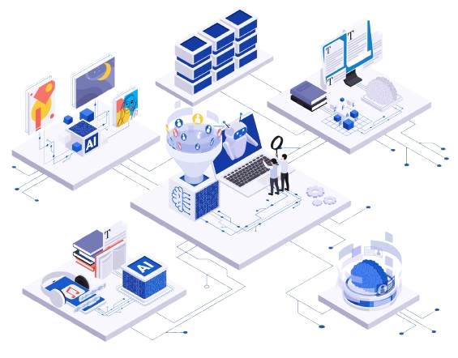

OPPORTUNITÀ DELL'INTELLIGENZA ARTIFICIALE
L’IA sta rivoluzionando diversi settori, migliorando servizi e processi:
- In ambito sanitario, consente diagnosi più precise e rapide, supportando i medici nell’individuazione di malattie.
- Nel mondo del lavoro, automatizza
compiti ripetitivi, aumentando
l’efficienza ma richiedendo strategie
per la riqualificazione dei lavoratori.
- Contribuisce alla sostenibilità,
ottimizzando il consumo energetico e
riducendo gli sprechi, favorendo un
impatto ambientale più positivo.
RISCHI E PREOCCUPAZIONI
L’IA solleva importanti questioni legate alla privacy, poiché la
raccolta di dati personali deve essere regolamentata per evitare
abusi.

- Gli algoritmi possono riflettere bias
preesistenti, causando discriminazioni
in ambiti come l’assunzione del
personale.
- Infine, l’automazione potrebbe ridurre
i posti di lavoro, rendendo necessarie
strategie di riqualificazione per
evitare impatti negativi
sull’occupazione.
IL FUTURO DELL'INTELLIGENZA ARTIFICIALE
L’IA deve essere sviluppata in modo responsabile, con
normative che ne garantiscano la trasparenza e la sicurezza.
- È essenziale bilanciare innovazione e
sostenibilità, assicurando che la
tecnologia migliori la qualità della vita
senza comprometterne l’etica.
- Un approccio equo e umanista
permetterà all’IA di servire la società,
rispettando i diritti e la dignità delle
persone.